Clicking Validate no longer moves stock on its own. Receipts, Delivery Orders and Internal Transfers that match your rules wait in a locked Waiting for Approval state until every approval tier has signed off, with a full audit trail of who approved, when, and why a request was rejected.
Stock leaves the warehouse the moment someone clicks Validate. For high-value goods, sensitive customers or junior staff, that is one click too few.
Your team keeps using the normal Validate button. The module takes over from there.
Screenshots were taken on Odoo 17.0 with demo data: a two-tier rule for customer deliveries (Team Leader Sara Haddad, then any member of a Warehouse Supervisors group), a single-tier rule for internal transfers, and a receipts rule that only applies when Marc Demo validates.
Inventory › Operations › Transfers to Approve is the approver’s worklist. Inventory › Configuration › Approval Rules is visible to the Transfer Approvals / Administrator group.
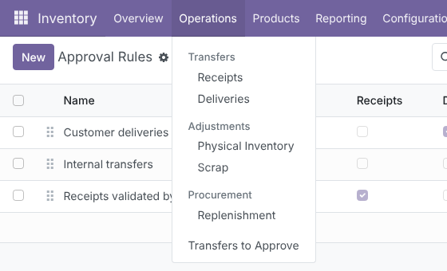
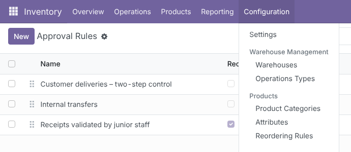
Each rule ticks Receipts, Delivery Orders and/or Internal Transfers, and can be narrowed to specific Operation Types, Warehouses, Requesting Users or Requesting Groups. Rules are ordered with the drag handle; the first matching rule applies. The Approval Tiers tab lists the tiers in signing order, each with Approver Users and/or Approver Groups. The Transfers smart button lists every transfer that went through the rule.
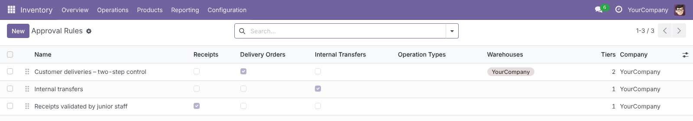
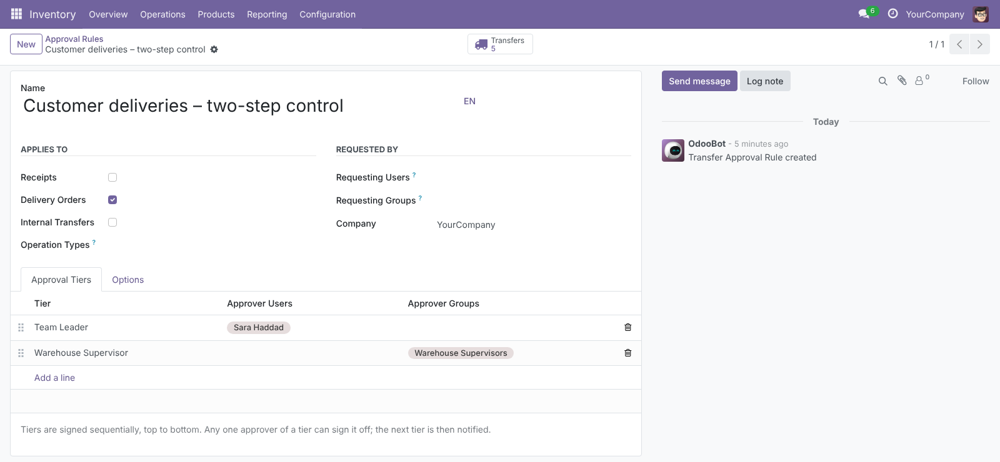
On the Options tab: Validate on Final Approval (execute the transfer automatically after the last tier, or send it back to Ready for manual validation), Allow Self-Approval (off by default: the requester is excluded from every tier), Require Drawn Signature, Email Notifications and Schedule To-Do Activities. Rule changes are tracked in the chatter.
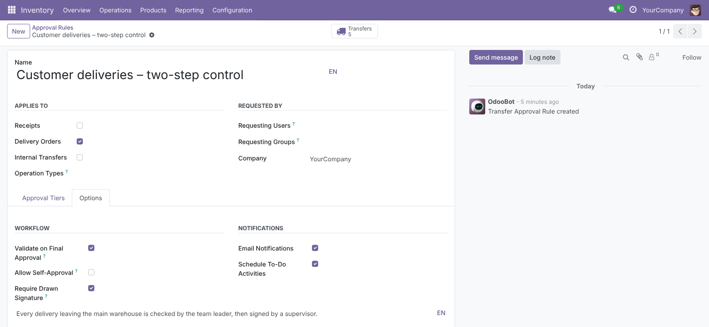
When a governed transfer is validated, drafts are confirmed, quantities are prepared and Odoo’s own checks run (lots, serials, empty quantities), but nothing is executed. The status bar shows the new Waiting for Approval step, a banner shows the Current tier and Signed tiers, and the Validate buttons are replaced by Approve and Reject for the current approver. The operations list becomes read-only, and the same lock is enforced on the server: move lines cannot be added, edited or deleted, and the transfer cannot be unreserved, rechecked or processed.
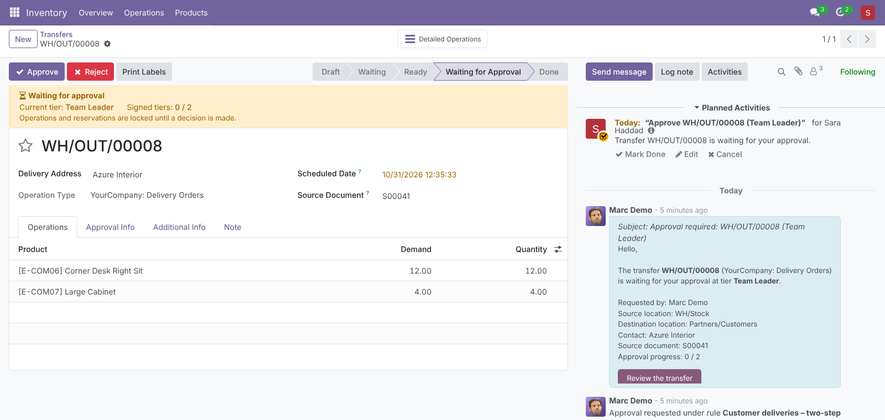
Approve opens a dialog showing the transfer and the Tier being signed, with an optional Comment and a Signature pad (mandatory when the rule requires it). The decision is stored on the tier line with the signer and the date, and posted in the chatter.
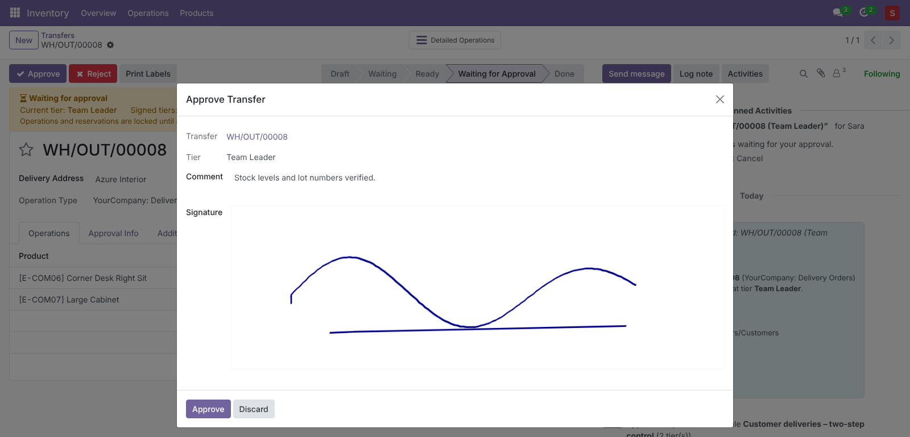
Reject asks for a Rejection Reason; an empty or blank reason is refused. The rejected tier keeps the reason, the remaining tiers are Cancelled, and the transfer goes back to Ready with its reservation intact and a red Approval rejected banner. The requester receives the reason by email. Correcting the transfer and validating it again starts cycle 2; the history of cycle 1 is kept.
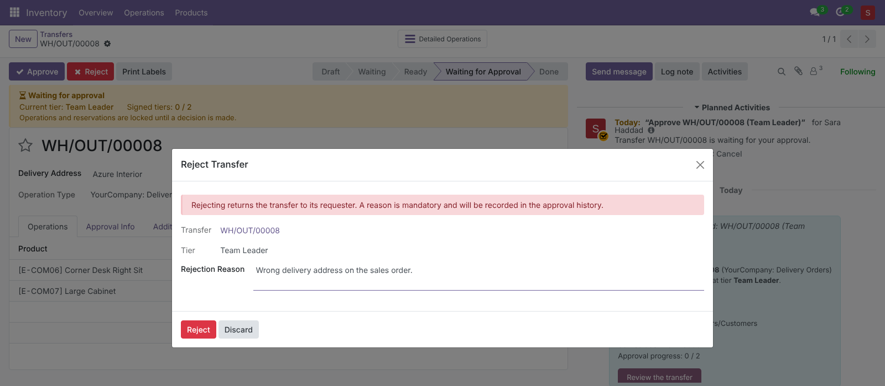
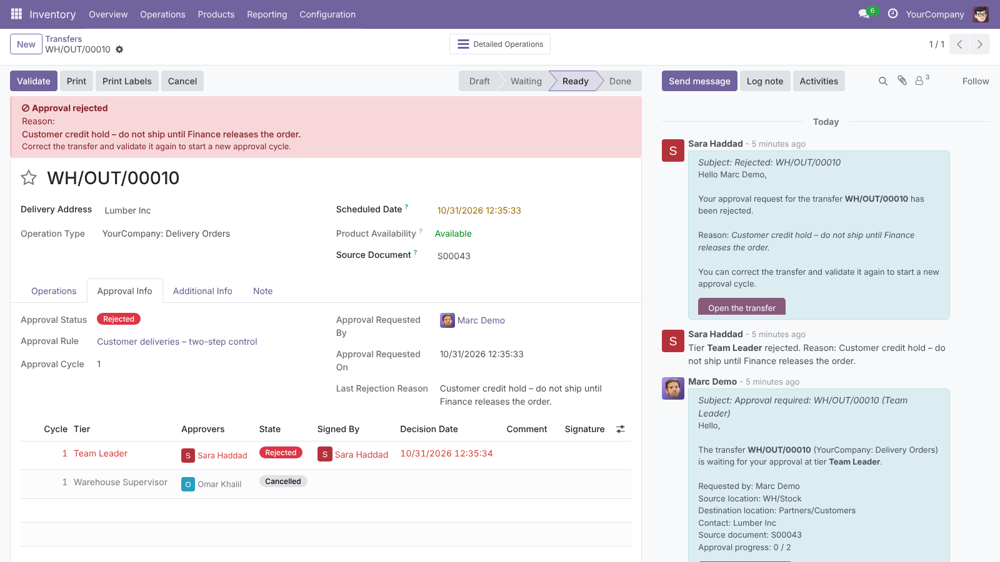
The Approval Info tab shows the Approval Status, Approval Rule, Approval Cycle, Approval Progress, Current Approvers, who requested it and when. Below, every tier of every cycle: Approvers, State, Signed By, Decision Date, Comment and Signature. Here tier 1 is signed and tier 2 (a group-based tier, resolved to Omar Khalil) is pending.
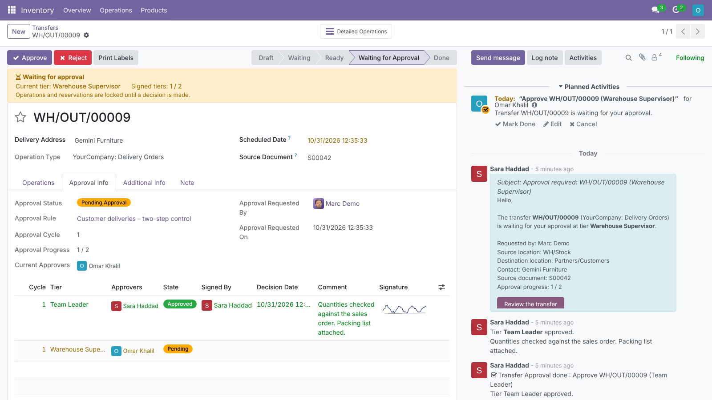
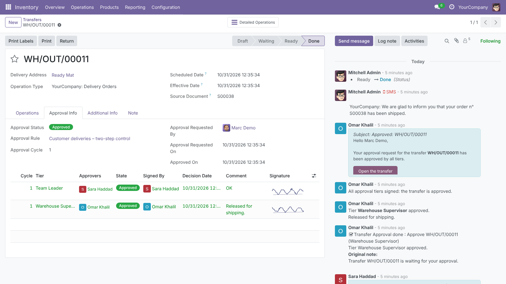
The menu opens with the Awaiting My Approval filter, so each approver sees only the transfers whose current tier is theirs. The transfer list also gets Waiting for Approval and Approval Rejected filters, and optional Approval Status and Current Approvers columns (shown here with the filter removed, as an administrator).
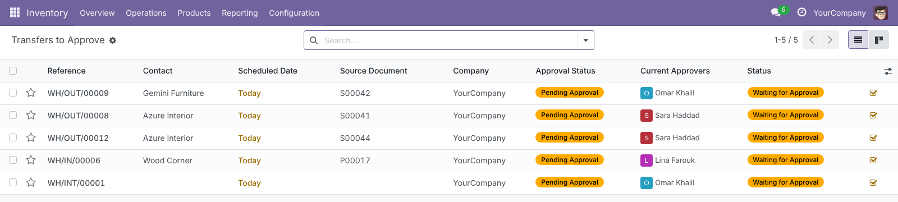
When a tier opens, its approvers receive the Transfer Approval: Request email (operation type, requester, locations, contact, source document, progress and a Review the transfer button) and a Transfer Approval activity. Signing closes the signer’s activity and removes the others of that tier. The requester receives Transfer Approval: Approved or Transfer Approval: Rejected. Emails are rendered in the recipient’s language.
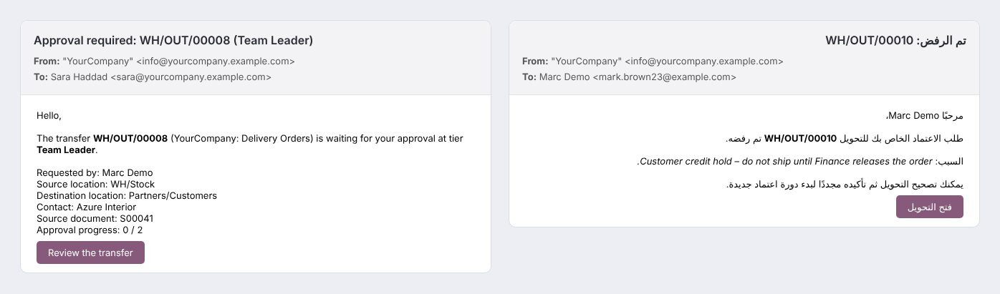
The person who validated sees the same banner but no Approve or Reject buttons. Instead, Recall Request withdraws the request (also available to administrators): open tiers are cancelled and the transfer returns to its previous state, ready to be corrected.
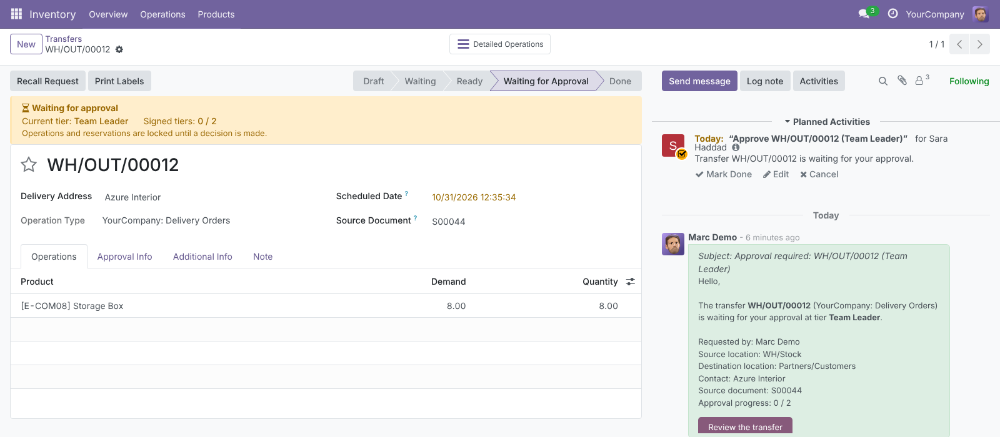
Every view, menu, button, field, filter, status, warning, error message and email template is translated in ar_001. Emails render right-to-left.
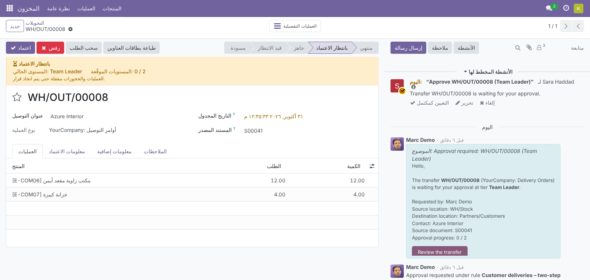
Two levels: the transfer’s Approval Status, and the state of each tier line in its history.
Handled in the code, and most of them pinned down by the automated tests.
A new Transfer Approvals privilege with two levels, set on the user form.
| Who | Can |
|---|---|
| Inventory / User | Validate (and so request approval), see rules and approval history, recall their own requests. |
| Transfer Approvals / Approver | Implies Inventory / User. Ready-made group to use in Approver Groups. |
| Transfer Approvals / Administrator | Create and edit Approval Rules, sign or reject any tier (override), recall any request. |
| Tier approvers | Only the users listed on the current tier, or members of its groups, can approve or reject it. Other tiers are refused. |
| Approval history | Read-only for everyone; written only by the workflow engine. |
| Multi-company | Record rules on rules, tiers and sign-offs restrict them to the user’s allowed companies. |
| Odoo version | 17.0, Community and Enterprise |
| Depends on | stock, mail |
| Python dependency | None |
| Menus | Inventory › Operations › Transfers to Approve Inventory › Configuration › Approval Rules |
| Models | stock.picking.approval.rule, stock.picking.approval.tier, stock.picking.approval.line, wizard stock.picking.approval.wizard |
| Extends | stock.picking (new state to_approve, Approval Info tab, filters), stock.move and stock.move.line (lock while under review) |
| Data | 3 email templates (Request, Approved, Rejected), 1 activity type (Transfer Approval) |
| Automated tests | 28 TransactionCase tests: state interception, locking, sequential and group-based tiers, permission enforcement, self-approval, rejection reasons, recall and cancel, rule scope and priority, signatures, notifications, backorders. Odoo’s stock test suite (535 tests) gives the same results with the module installed as without it. |
| Translations | Arabic (ar_001), plus a .pot template |
| License | LGPL-3 |
Questions, a demo, or an adaptation to your own approval process (value thresholds, extra tiers, other documents)? Get in touch.
✉ ibrahim.yahiah@gmail.com LinkedIn: Ibrahim YahiaAuthor: Ibrahim Yahia · License: LGPL-3